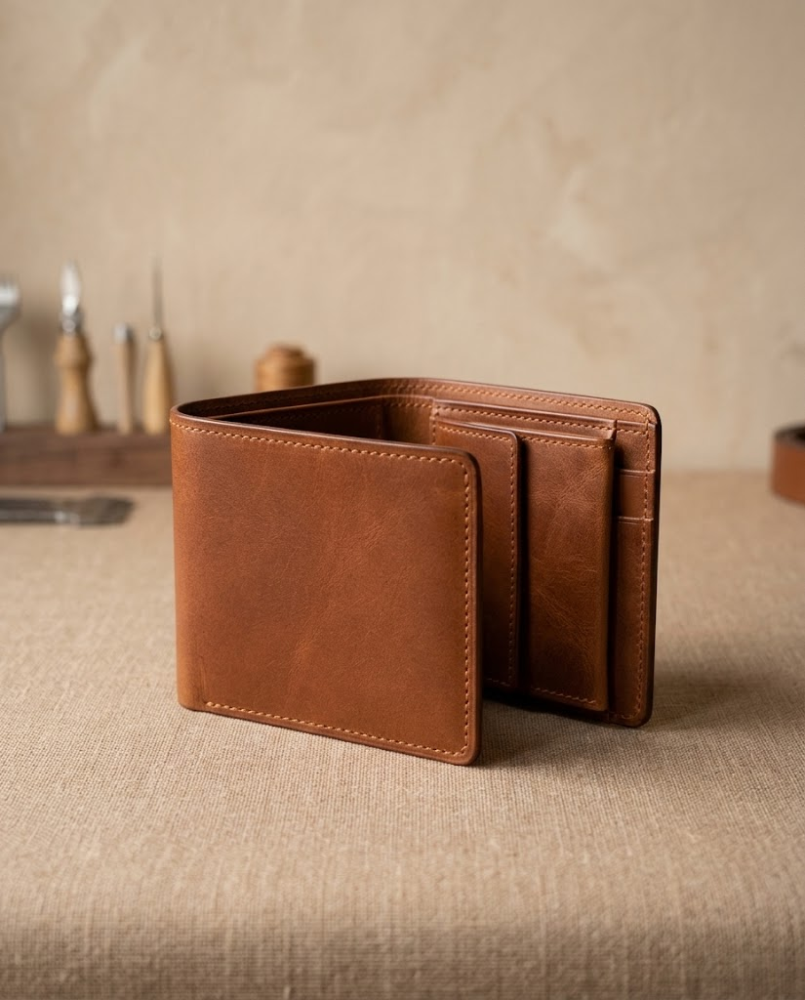
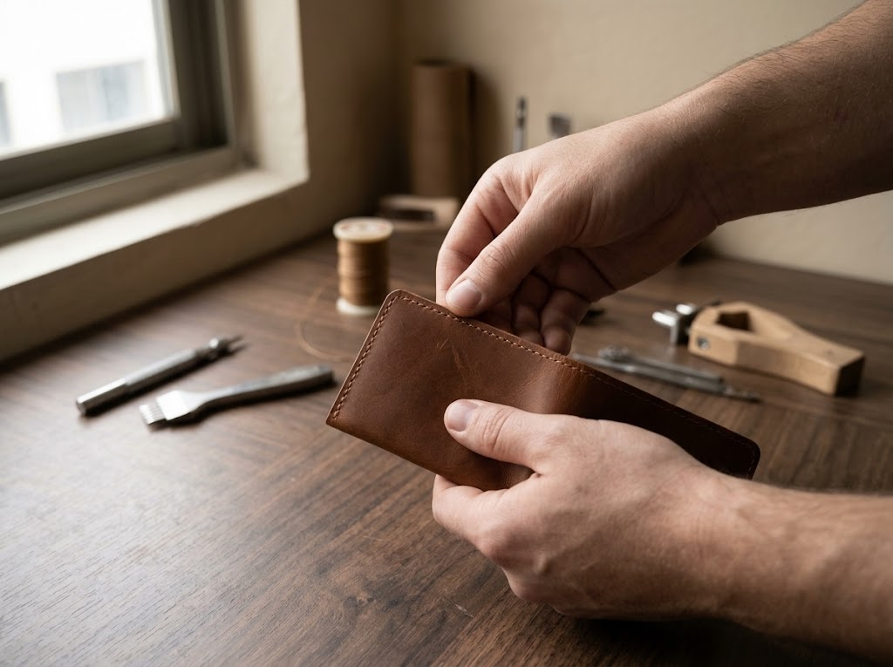
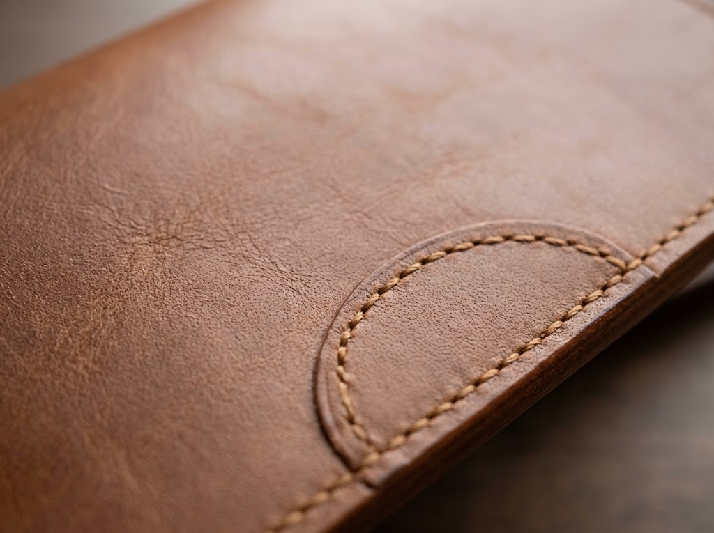
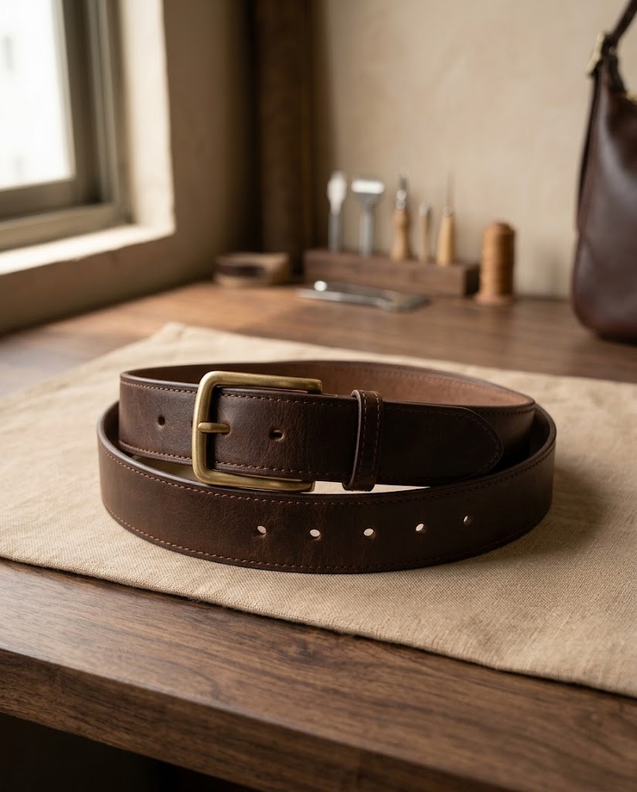
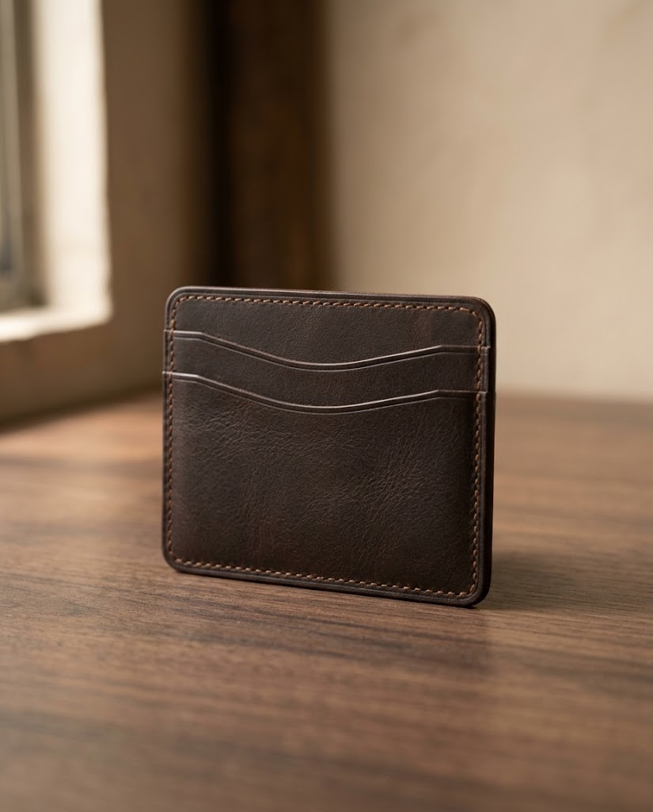
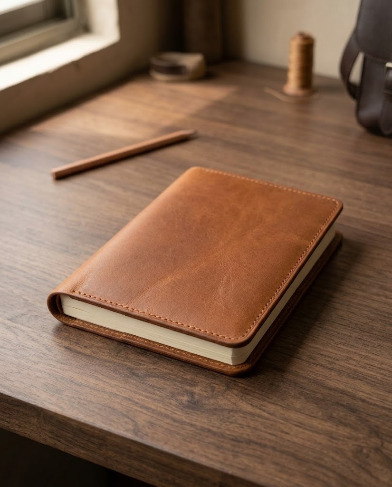
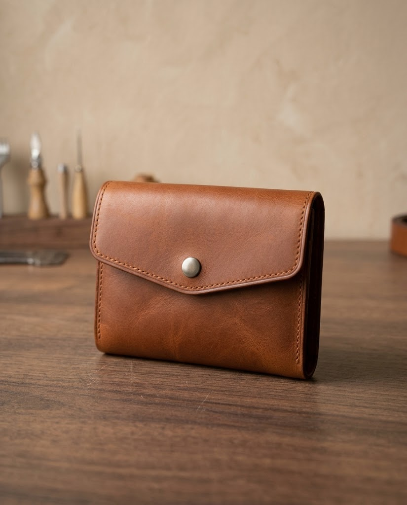

01 / FORM
Purposeful shape
A useful form gives each item its role, from a compact card holder to a roomy carry bag.
HANDMADE LEATHER
A closer look at the tactile details behind handmade leather goods: the grain, the seams, the edges, and the finish.
Discuss your requirements ↗
THE SMALL DETAILS
Handmade products can show evidence of the maker's process. These are details worth looking for when choosing leather goods.

A useful form gives each item its role, from a compact card holder to a roomy carry bag.

Surface character gives leather its distinctive look and feel.

Finishing touches bring the different parts of a product together.
HANDMADE-INSPIRED PIECES

↗A minimal carry piece for the cards you reach for most.
Enquire about this piece →
↗A tactile cover for daily notes and ideas.
Enquire about this piece →
↗A compact shape for everyday essentials.
Enquire about this piece →